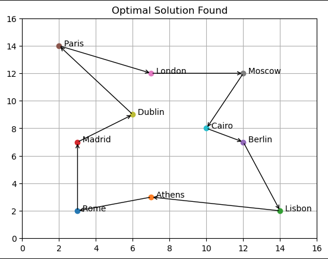

Travelling Salesman Problem
Description:
Optimization (combinatorial)
Single-objective
Constraints (yes)
The travelling salesman problem, asks the following question:
Given a list of cities and the distances between each pair of cities, what is the shortest possible route that visits each city exactly once and returns to the origin city?
Step 1: Import python libraries and PyGenAlgo classes
import numpy as np
import os, sys, copy
import matplotlib.pyplot as plt
from collections import namedtuple
# Import main classes.
from pygenalgo.genome.gene import Gene
from pygenalgo.genome.chromosome import Chromosome
from pygenalgo.engines.standard_ga import StandardGA
from pygenalgo.utils.utilities import cost_function
# Import Selection Operator(s).
from pygenalgo.operators.selection.linear_rank_selector import LinearRankSelector
# Import Crossover Operator(s).
from pygenalgo.operators.crossover.order_crossover import OrderCrossover
# Import Mutation Operator(s).
from pygenalgo.operators.mutation.swap_mutator import SwapMutator
Step 2: Auxiliary structures
# Data structure to represent a city on a grid.
City = namedtuple("City", ["Name", "x", "y"])
# Define n_cities on a grid [0, 15] x [0, 15].
rome = City("Rome" , 3, 2)
athens = City("Athens", 7, 3)
lisbon = City("Lisbon", 14, 2)
madrid = City("Madrid", 3, 7)
berlin = City("Berlin", 12, 7)
paris = City("Paris" , 2, 14)
london = City("London", 7, 12)
moscow = City("Moscow", 12,12)
dublin = City("Dublin", 6, 9)
cairo = City("Cairo" , 10, 8)
# Put all the cities in a list.
city_list = [rome, athens, lisbon, madrid, berlin,
paris, london, moscow, dublin, cairo]
Step 3: Define the objective function
@cost_function(minimize=True)
def fun_TSP(individual: Chromosome):
"""
This function computes the total distance travelled from all cities.
We assume (hard constraint) that the order that they cities appear
in the genome list, is the same order the traveler is visiting them.
When we reach the end of the list we make one extra calculation from
the last entry of the list to the first: [-1] -> [0].
To discourage loops if two consecutive cities are identical we add a
penalty to the total distance. However, this should not happen if we
use only swap mutation operator.
"""
# Compute the distance.
total_distance = 0.0
# Get the size of the genome.
N = len(individual.genome)
# Iterate through all the cities.
for i, city_a in enumerate(individual.genome):
# Once we reach at the end, the next index
# 'j' should point at the beginning of the
# list.
j = i + 1 if i < N-1 else 0
# Get the next city in the list.
city_b = individual.genome[j]
# If the cities are the same, add penalty.
if city_a == city_b:
total_distance += 15.0
else:
# Otherwise compute their distance.
x_a, y_a = city_a.value.x, city_a.value.y
x_b, y_b = city_b.value.x, city_b.value.y
# Compute the Euclidean distance.
total_distance += np.sqrt((x_a - x_b)**2 + ((y_a - y_b)**2))
# _end_for_
# Return the solution.
return total_distance
# _end_def_
# Set a random generator.
rng = np.random.default_rng()
# Random function: Select randomly a city from the list.
# In practice this will not be used here because of the
# choice we made with the swap mutator.
rand_fc = lambda: city_list[rng.integers(0, len(city_list))]
Step 4: Set the GA parameters
# Define the number of chromosomes.
N = 50
# Initial population.
population = []
# Make an identical copy of the city list.
init_list = copy.deepcopy(city_list)
for i in range(N):
# Shuffle the list before each initialization
# to provide a different order of the cities.
rng.shuffle(init_list)
# Create the Chromosome and add it into the population.
population.append(Chromosome([Gene(c, rand_fc) for c in init_list],
None, True))
# _end_for_
# Create the StandardGA object that will carry on the optimization.
test_GA = StandardGA(initial_pop=population,
fit_func=fun_TSP,
select_op=LinearRankSelector(),
mutate_op=SwapMutator(0.2),
crossx_op=OrderCrossover(0.8))
Step 5: Run the optimization
test_GA(epochs=500, elitism=True, verbose=False)
Step 6: Final output
# Extract the optimal solution from the GA.
optimal_solution = test_GA.best_chromosome()
# Extract the fitness value from the optimal solution.
optimal_fit = -optimal_solution.fitness
# Display the (final) optimal value.
print(f"Minimum (distance) Found: {optimal_fit:.5f}\n")
# Display each gene value separately.
for i, xi in enumerate(optimal_solution.values()):
print(f"{i} : {xi}")
Step 7: Visualize the solution
fig = plt.figure()
ax = fig.add_subplot(111)
for city in city_list:
ax.plot(city.x, city.y, 'o')
ax.annotate(f' {city.Name}', xy=(city.x, city.y))
# _end_for_
# Get the size of the genome.
N = len(optimal_solution.genome)
# Iterate through all the cities.
for i, city_a in enumerate(optimal_solution.genome):
# Once we reach at the end, the next index
# 'j' should point at the beginning of the
# list.
j = i + 1 if i < N-1 else 0
# Get the next city in the list.
city_b = optimal_solution.genome[j]
x_a, y_a = city_a.value.x, city_a.value.y
x_b, y_b = city_b.value.x, city_b.value.y
ax.annotate("", xy=(x_a, y_a), xytext=(x_b, y_b),
arrowprops=dict(arrowstyle="<-"))
# _end_for_
ax.grid()
ax.set_xlim([0, 16])
ax.set_ylim([0, 16])
plt.title("Optimal Solution Found")
plt.show()
